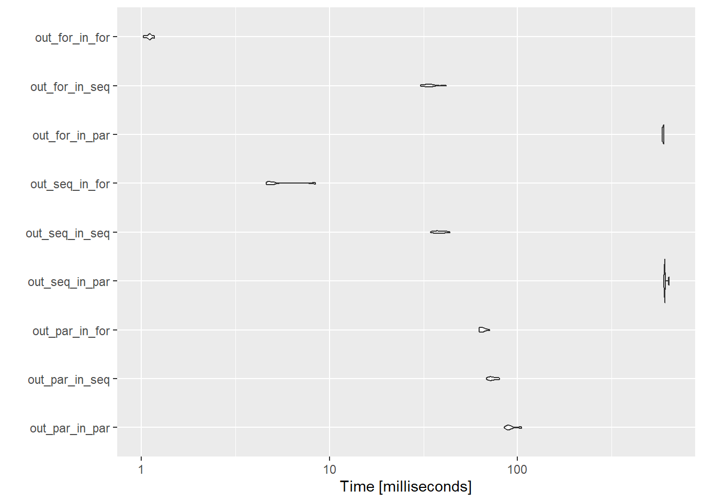
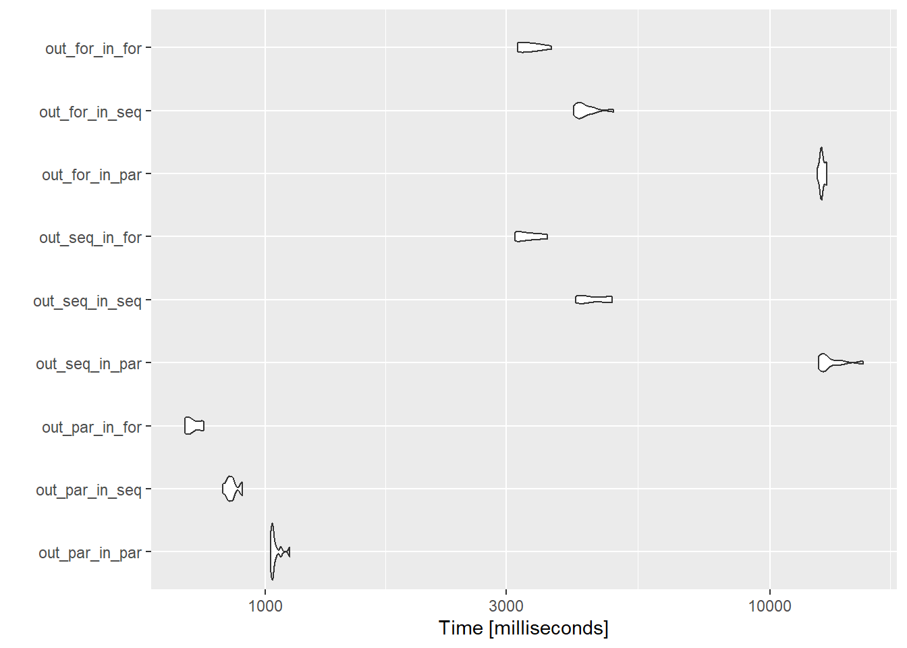

library(microbenchmark)
library(doFuture)Loading required package: foreachLoading required package: futurelibrary(foreach)
library(doRNG)Loading required package: rngtoolslibrary(ggplot2)
registerDoFuture()
plan(multisession)Galen Holt
I tend to run a lot of simulation code that consists of some core functions that are then run for a large number of different parameter values. This bit is entirely independent and clearly parallelisable. There are also typically large calculations inside the simulation functions that can be parallelised. What’s not clear to me is whether I should write them all with parallel-friendly code (foreach %dopar%, furrr, etc), or just one or the other. While my particular situation gives me the option to choose, it’s likely not uncommon to call parallelisable functions from a package in code that is itself parallelised, and so is useful to know how this works.
I already did some tests of what sort of work makes most sense to be parallelised so I’ll try to follow those ideas as I do these tests- assuming that the internal parallel code actually makes sense to be parallel, and wouldn’t just be faster sequential anyway. To test this, I’ll attempt to build an example that is non-trivial, but still try to stay minimally complex to avoid getting into writing a complex population dynamics model.
I’ll use the {future} package, along with {dofuture} and {foreach}, because I tend to like writing for loops (there’s a reason I’ll try to write up sometime later). I test other packages in the {future} family (furrr, future_apply) where I try to better understand when they do and don’t give speed advantages.
The foreach package provides built-in nesting, with constructions using %:%. This is designed for loops that can be written tightly together (no processing between them). For example, we might write a nested loop over two sets of parameters mean and sd and calculate the realised coefficient of variation and return it as a matrix.
realised_cv <- foreach(i = 1:10, .combine = cbind) %:%
foreach(j = seq(from = 0, to = 1, by = 0.1), .combine = rbind) %dopar% {
a <- rnorm(1000, mean = 1, sd = j)
sd(a)/mean(a)
}
realised_cv [,1] [,2] [,3] [,4] [,5] [,6]
result.1 0.00000000 0.0000000 0.0000000 0.00000000 0.00000000 0.00000000
result.2 0.09891223 0.1008605 0.0945898 0.09907191 0.09714435 0.09994607
result.3 0.19514135 0.2004283 0.1978253 0.19998854 0.19953238 0.19845697
result.4 0.30272246 0.2979960 0.2879971 0.28725665 0.29370995 0.31131028
result.5 0.40790566 0.3990116 0.4000965 0.39641709 0.39208482 0.40541046
result.6 0.49720731 0.4974663 0.5049968 0.50798889 0.48008738 0.49096348
result.7 0.64000011 0.5884977 0.6004626 0.65640455 0.59444297 0.60885005
result.8 0.72563956 0.7155720 0.7112370 0.72276167 0.74244327 0.70035968
result.9 0.81651582 0.8431277 0.7823390 0.78515947 0.79606197 0.79760404
result.10 0.85954100 0.9478188 0.8785366 0.89448581 0.91753339 0.86162369
result.11 0.93010890 1.0626908 0.9827518 0.99434673 0.98176869 1.01819481
[,7] [,8] [,9] [,10]
result.1 0.0000000 0.00000000 0.00000000 0.00000000
result.2 0.1005070 0.09780583 0.09893618 0.09814039
result.3 0.2078426 0.20334995 0.20473360 0.19951013
result.4 0.3012958 0.29666971 0.30354469 0.29686108
result.5 0.3995659 0.38186272 0.39905156 0.39615277
result.6 0.4946903 0.50200764 0.48092292 0.48294714
result.7 0.5863672 0.62224528 0.61382700 0.61524278
result.8 0.7167759 0.68353520 0.72894997 0.69285072
result.9 0.8086785 0.80463310 0.78535213 0.79137067
result.10 0.9121453 0.88604900 0.89767558 0.92785435
result.11 1.0691658 0.95093915 1.05077995 0.99766564That can be super useful, but isn’t the goal here- I’m interested in the situation where we have
forloop () {
lots of processing
forloop2(outcomes of the processing) {
more processing
}
more processing
}Let’s say we have an outer loop that takes a set of parameter values and loops over them. Maybe it is the mean of some distribution. Maybe it’s areas of a spatial dataset to process. Here, we’ll use them as the mean of a distribution, create the distribution, do some calculations, and then send that to the next loop.
The calculations here aren’t doing anything interesting. They’re just setting up a matrix mult, then feeding the outcome of that as parameters to another random number matrix mult, calculating a mean, and then doing another calculation (some sort of weird frankenstein cv).
outer_out <- foreach(i = 1:100,
.combine = c) %dorng% {
# Do a matrix mult on a vector specified with i
a <- rnorm(100, mean = i)
b <- matrix(rnorm(100*100), nrow = 100)
cvec <- a %*% b
# Now iterate over the values in c to do somethign else
inner_out <- foreach(j = cvec,
.combine = c) %dorng% {
d <- rnorm(100, mean = j)
f <- matrix(rnorm(100*100), nrow = 100)
g <- d %*% f
mean(g)
}
h <- sd(cvec)/inner_out
}In practice, the inner loop is likely a function we’d call. And the outer too, potentially, depending on the structure of the project. And making them functions will make benchmarking much easier. For both inner and outer loops I’ll try parallel and sequential foreach and sequential (because that’s the only option) for. I want to do the factorial test. Is there a slick way to do that without writing nine outer functions? I think yes- pass the inner function as an argument to the outer.
This is likely to be faster than the sequential
outer_par <- function(size, innerfun) {
outer_out <- foreach(i = 1:size,
.combine = c) %dorng% {
# Do a matrix mult on a vector specified with i
a <- rnorm(size, mean = i)
b <- matrix(rnorm(size*size), nrow = size)
cvec <- a %*% b
# Now iterate over the values in c to do somethign else
inner_out <- innerfun(in_vec = cvec, size = size)
h <- sd(cvec)/inner_out
}
return(outer_out)
}outer_seq <- function(size, innerfun) {
outer_out <- foreach(i = 1:size,
.combine = c) %do% {
# Do a matrix mult on a vector specified with i
a <- rnorm(size, mean = i)
b <- matrix(rnorm(size*size), nrow = size)
cvec <- a %*% b
# Now iterate over the values in c to do somethign else
inner_out <- innerfun(in_vec = cvec, size = size)
h <- sd(cvec)/inner_out
}
return(outer_out)
}outer_for <- function(size, innerfun) {
outer_out <- matrix(nrow = size, ncol = size)
for(i in 1:size) {
# Do a matrix mult on a vector specified with i
a <- rnorm(size, mean = i)
b <- matrix(rnorm(size*size), nrow = size)
cvec <- a %*% b
# Now iterate over the values in c to do somethign else
inner_out <- innerfun(in_vec = cvec, size = size)
outer_out[, i] <- sd(cvec)/inner_out
}
outer_out <- c(outer_out)
return(outer_out)
}benchsize = 10
bench10 <- microbenchmark(
out_par_in_par = outer_par(benchsize, inner_par),
out_par_in_seq = outer_par(benchsize, inner_seq),
out_par_in_for = outer_par(benchsize, inner_for),
out_seq_in_par = outer_seq(benchsize, inner_par),
out_seq_in_seq = outer_seq(benchsize, inner_seq),
out_seq_in_for = outer_seq(benchsize, inner_for),
out_for_in_par = outer_for(benchsize, inner_par),
out_for_in_seq = outer_for(benchsize, inner_seq),
out_for_in_for = outer_for(benchsize, inner_for),
times = 10
)
bench10Unit: milliseconds
expr min lq mean median uq max neval
out_par_in_par 84.9767 88.2111 92.25616 89.71450 92.9834 104.9385 10
out_par_in_seq 68.1551 71.2124 73.53869 72.20630 76.2272 80.1539 10
out_par_in_for 62.4467 63.0248 65.05917 64.78555 66.6618 70.8354 10
out_seq_in_par 599.3219 602.4530 607.41276 605.67355 606.1846 636.4535 10
out_seq_in_seq 34.5389 36.9300 38.60330 37.85020 40.7410 43.5612 10
out_seq_in_for 4.6060 4.7449 5.53786 4.91260 5.0865 8.4469 10
out_for_in_par 585.5971 589.8876 593.56540 594.33495 597.9302 600.0981 10
out_for_in_seq 30.4637 32.2257 34.06626 33.48505 35.0095 41.7873 10
out_for_in_for 1.0257 1.0794 1.10591 1.10840 1.1246 1.1765 10Well, that’s interesting. The inner loop as a for is always fastest. Paralleling the outer loop is faster than sequential or for, unless both loops are for, and that’s far and away the fastest of all.
Coordinate system already present. Adding new coordinate system, which will
replace the existing one.
Does it change appreciably as the size goes up?
I could write a loop here, but let’s just check it at 100 for the moment- this takes too long to run to do a big look over values.
benchsize = 100
bench100 <- microbenchmark(
out_par_in_par = outer_par(benchsize, inner_par),
out_par_in_seq = outer_par(benchsize, inner_seq),
out_par_in_for = outer_par(benchsize, inner_for),
out_seq_in_par = outer_seq(benchsize, inner_par),
out_seq_in_seq = outer_seq(benchsize, inner_seq),
out_seq_in_for = outer_seq(benchsize, inner_for),
out_for_in_par = outer_for(benchsize, inner_par),
out_for_in_seq = outer_for(benchsize, inner_seq),
out_for_in_for = outer_for(benchsize, inner_for),
times = 10
)
bench100Unit: milliseconds
expr min lq mean median uq
out_par_in_par 1023.7937 1030.8700 1046.3422 1035.6157 1049.3785
out_par_in_seq 823.5130 846.1634 858.6383 854.9462 864.9148
out_par_in_for 692.9599 696.3829 718.2194 711.0219 748.3779
out_seq_in_par 12493.7818 12736.2695 13170.3713 12786.6280 13505.5624
out_seq_in_seq 4121.0742 4189.2121 4469.9926 4364.0172 4780.0679
out_seq_in_for 3121.3812 3132.6139 3308.9317 3262.9928 3420.3442
out_for_in_par 12419.5134 12582.6411 12690.6176 12659.7547 12811.1161
out_for_in_seq 4086.9201 4168.8308 4312.4892 4215.7117 4417.5795
out_for_in_for 3162.4419 3184.7607 3348.9103 3334.3263 3486.7266
max neval
1118.2342 10
901.0250 10
755.4162 10
15276.8972 10
4865.3044 10
3620.6838 10
12944.7178 10
4895.7690 10
3692.6295 10Coordinate system already present. Adding new coordinate system, which will
replace the existing one.
Now the parallelisation over the outer loop is clearly faster. The simple for for the inner is fastest there.
Are there general conclusions here?
There has to be quite a lot of work done before parallelisation is worth it.
I’m not convinced I have a general conclusion for nestedness- with even more work in the inner loop, would parallel there end up being better?
Need to test specific uses pretty carefully I think, which is unfortunate- it can mean spending a fair amount of time testing configurations
for is much faster than foreach %do%, it’s not just a matter of deleting the ‘par’ in %dopar%, unfortunately, but re-framing for a for loop.- We won't always have control over this if it's an external functionHow do the workers get split up? If we parallel an outer loop over more workers than we have cores, does it matter what happens in the inner loop? Or do they end up causing some sort of worker shuffle?
How do different plans affect these outcomes- does running this with plan(future.batchtools) require WAY more work to be worth it? Does plan(multicore) need less?